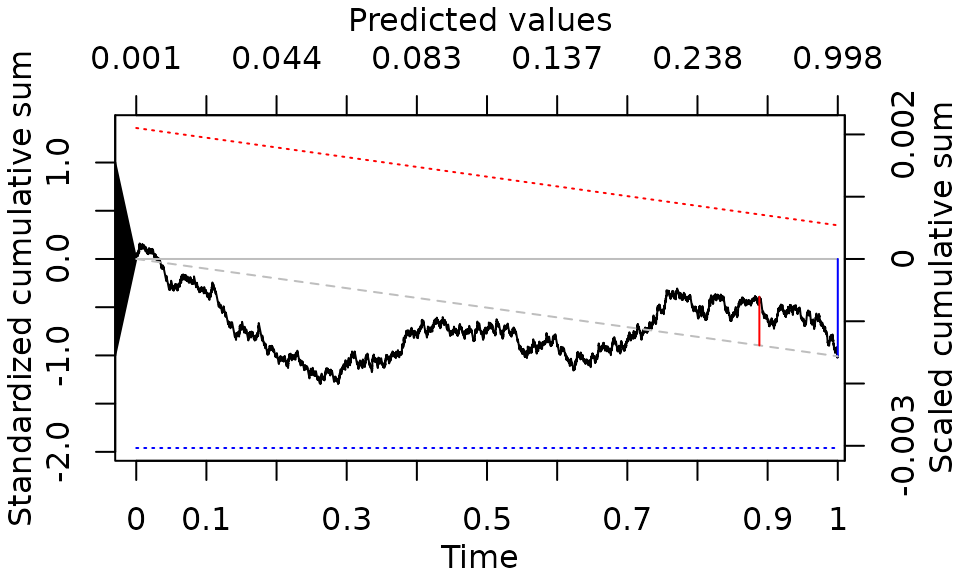
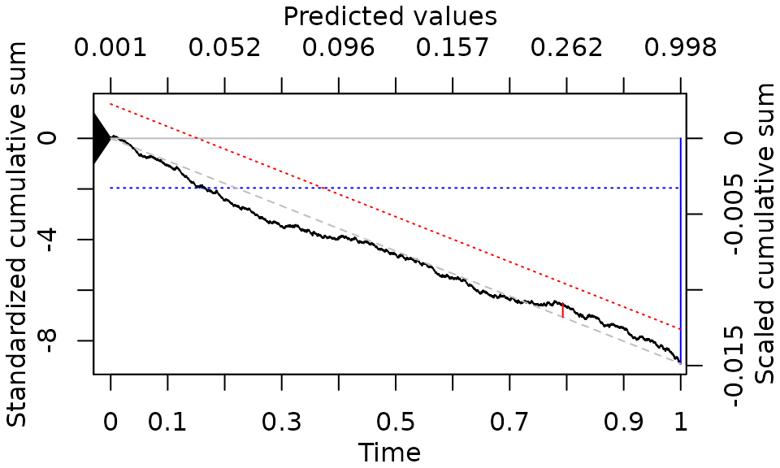

vignettes/tutorial.Rmd
tutorial.Rmdcumulcalib is an R package for the implementation of the cumulative calibration assessment for risk prediction models.
If you use this approach for scientific work, please cite the original paper: {Sadatsafavi M, Petkau J, Statistics In Medicine, 2004 (doi: 10.1002/sim.10138)}
In order to use cumulcalib efficiently you should be reasonably familiar with the underlying statistical methodology. Please visit the related publication above (or the arxiv version: https://arxiv.org/abs/2307.09713).
We illustrate the use of this package, as well as basic interpretations of the cumulative calibration plots, through a running example.
We use data from the GUSTO-I study which is widely used in predictive analytics. These data are available from the predtools package,
The outcome is 30-day mortality (we denote it by \(y\)). We also convert the Killip score, a measure of the severity of heart failure, to a binary variable (cut off >1):
gusto$y <- gusto$day30
gusto$kill <- (as.numeric(gusto$Killip)>1)*1We will develope and validate a risk prediction model for 30-day mortality after a heart attack based on these data. To create a semi-realistic scenario, we use the non-US sub-sample of the data for model development and the US sub-sample for model validation, and fit a logistic regression model on the development sample.
dev_data <- gusto[!gusto$regl %in% c(1, 7, 9, 10, 11, 12, 14, 15),] #The regl variable contains location codes
val_data <- gusto[gusto$regl %in% c(1, 7, 9, 10, 11, 12, 14, 15),]
model <- glm(y ~ age + miloc + pmi + kill + pmin(sysbp,100) + pulse, data=dev_data, family=binomial(link="logit"))The prevalence of the outcome in the development and validation samples are, respectively, 0.07 and 0.07. Here are the coefficients of the model:
| Coefficients | |
|---|---|
| (Intercept) | -2.0841861 |
| age | 0.0781423 |
| milocOther | 0.4026548 |
| milocAnterior | 0.5773049 |
| pmiyes | 0.4677806 |
| kill | 0.7665919 |
| pmin(sysbp, 100) | -0.0774778 |
| pulse | 0.0182409 |
We use this model to predict the outcome in the validation sample:
val_data$pi <- predict(model, type="response", newdata=val_data)Let’s start with the conventional calibration plot for this model, which is an estimate of the average value of the true risk at a given level of predicted risk (using the calibration_plot function of the predtools package):
predtools::calibration_plot(val_data, obs="y", pred="pi")
#> $calibration_plotThe model seems to be well calibrated. One issue with such a plot is that it generally requires binning (as done above) or smoothing. This is because predicted risks often have many levels, and within each level of predicted risk only a few, and mostly only one, \(y\) is observed. This requirement makes this assessment somewhat subjective: whether to use binning or smoothing. If the former, how many bins? If the latter, which smoothing method, and with which tuning parameter(s)?
The cumulative calibration assessment is based on the behavior of standardized partial sum of prediction errors (i.e., \(y-\pi\), after ordering the data ascendingly on \(\pi\)). The promise is that if the model is calibrated, the resulting partial sum, after suitable standardization, will converge to the Brownian motion in the [0,1] interval. This approach does not require any regularization.
Details of such standardization is provided in the original publication. In brief, for the convergence to Brownian motion to work, the ‘time’ jump at step i should be proportional to the variance of \(y_i\), which, under the hypothesis that the model is calibrated, is \(\pi_i(1-\pi_i)\).
To assess cumulative calibration using this approach via the cumulcalib package, we use a simple function call and store the results:
library(cumulcalib)
res <- cumulcalib(val_data$y, val_data$pi) Let’s explore what type of results this call returns:
summary(res)
#> C_n (mean calibration error): -0.0015627663862339
#> C* (maximum absolute cumulative calibration error): 0.00200906446334084
#> Method: Two-part Brownian Bridge (BB)
#> S_n (Z score for mean calibration error) -1.00908104947661
#> B* (test statistic for maximum absolute bridged calibration error): 1.02844827843833
#> Component-wise p-values: mean calibration=0.312935765573665 | Distance (bridged)=0.240744428186207
#> Combined p-value (Fisher's method): 0.270143602791056
#> Location of maximum drift: 22402 | time value: 0.888235817046905 | predictor value: 0.333472525720663The following elements are returned:
\(C_n\): sample estimate of mean calibration error (\(E(y-\pi)\))
\(C^*\) maximum absolute cumulative prediction error, divided by the number of observations. \(C^*\) is a ‘distance’ metric, similar to metrics such as Emax or the Integrated Calibration Index.
The other components in the summary depend on the Method requested for inference on model calibration. The default method is the Brownian Bridge test, which returns the following:
\(S_n\): the Z score for mean calibration error, obtained as \(\frac{nC_n}{\sqrt{\sum_1^n \pi_i(1-\pi_i)}}\). Note that the denominator is the square-root of total variance if the model is calibrated.
\(B^*\): this is the maximum distance of the random walk from the line that connects its start and end (the bridge line, hence the ‘bridge’ test). Under the null hypothesis that the model is calibrated, \(B^*\) follows the Kolmogorov distribution.
Component-wise p-values: These are individual p-values for each component of the test. The first one is the Z-test for mean calibration (testing if the average predicted and observed risks are equal). The second one is the test of the deviation of the random walk from the line that connects its origin and end (bridged distance).
Combined p-value: This is the unified p-value for moderate calibration (based on Fisher’s method)
Location of maximum drift: This provides information about the location that the maximum drift of the random walk occurs (corresponding to \(C^*\)). The rank of the observation, time, and predictor values at this point are reported.
Note: the Brownian bridge test operates by combining two statistic: \(C_n\), and maximum absolute deviation of the random walk from the line that connects its origin and end points. The test statistic related to the former is , and \(B^*\) for the latter, which has a Kolmogorov distribution under the null hypothesis. Because it can be shown that these two statistics are independent, one combined p-value can be generated using the Fisher’s method.
Based on the above results, both mean calibration p-value, and the bridged random walk p-value show that the data are compatible with the model being calibrated in this sample. Indeed, the combined p-value of 0.2701436 also indicated lack of strong evidence against the model being calibrated for the US population.
The returning object from the function call can be directly plotted:
plot(res)
The X axis is the ‘time’ value (running from 0 to 1). The corresponding predicted values are shown on the second X-axis on top. The default Y axis is the standardized sum (cumulative sum divided by the square root of the sum of variance of predicted risks). The second Y axis provides ‘scaled’ cumulative sum (divided by the number of observations). This means the terminal value of the random walk can be marked on the second Y-axis axis to identify mean calibration error.
The blue and red vertical lines, respectively, show the terminal value of the random walk and its maximum bridged deviation (given the default method, Brownian bridge, is used). The dotted lines of the same color mark the critical value of the test (by default at 5% significance level, see the documentation for the cumulcalib() function on how to disable inference lines or change significance level).
Here it is obvious that neither the terminal value (mean calibration error) nor the maximum deviation reach statistical significance.
The above results present how a calibrated model will look like. Let’s test how different forms of miscalibration present themselves on the cumulative calibration graph.
Let’s start with a model that under-estimates the risk. We mimic this by applying an odds-ratio of 0.75 to predicted risks.
val_data$pi2 <- val_data$pi*0.75/(1-val_data$pi*(1-0.75)) #One-shot transformation of risk to odds and back
res <- cumulcalib(val_data$y, val_data$pi2)
predtools::calibration_plot(val_data, obs="y", pred="pi2")
#> $calibration_plot
plot(res)As can be seen above, when predicted risks are systematically smaller than actual risks, prediction errors are generally positive, resulting in a generally ascending curve. Clearly, the Z-test component of the bridge test is rejected at 0.05 level (the corresponding p-value is 4.6582653^{-20}). However, as can bee see by the red markings on the graph, the bridge component is not affected by such systematic error (the corresponding p-value is 0.2022575). As the overall p-value for moderate calibration is affected by both, it remains significant (p-value: 0). As such, the null hypothesis that the model is moderately calibrated is rejected at 0.05 significance level.
We mimic this by applying an odds-ratio of 1.25 to predicted risks.
val_data$pi2 <- val_data$pi*1.25/(1-val_data$pi*(1-1.25)) #One-shot transformation of risk to odds and back
res <- cumulcalib(val_data$y, val_data$pi2)
predtools::calibration_plot(val_data, obs="y", pred="pi2")
#> $calibration_plot
plot(res)
Here, the opposite happens: when predicted risks are systematically larger than actual risks, prediction errors are generally negative, resulting in a generally descending curve. Again, the Z-test component of the bridge test is rejected at 0.05 level (the corresponding p-value is 5.1912618^{-19}), but the bridge component is not affected by such systematic error (the corresponding p-value is 0.4221737). Again, as the overall p-value for moderate calibration is affected by both, it remains significant (p-value: 0). As such, the null hypothesis that the model is moderately calibrated is rejected at 0.05 significance level.
To demonstrate how an over-fitted model might look, we refit the model based on only a sub-sample of 500 rows from the development sample. The intuition is that because of the small development sample, the model might not be calibrated. In particular, it might be over-fitted.
dev_data2 <- dev_data[sample(nrow(dev_data), 500, replace=F),]
model2 <- glm(y ~ age + miloc + pmi + kill + pmin(sysbp,100) + pulse, data=dev_data2, family=binomial(link="logit"))
val_data$pi2 <- predict(model2, type="response", newdata=val_data)Let’s look at the calibration plot
predtools::calibration_plot(val_data, obs="y", pred="pi2")
#> $calibration_plotThe model is indeed not as well calibrated as the model based on the full development sample. Let’s repeat the cumulative calibration exercise
res2 <- cumulcalib(val_data$y, val_data$pi2)
summary(res2)
#> C_n (mean calibration error): 0.000155141189373162
#> C* (maximum absolute cumulative calibration error): 0.00834106759839258
#> Method: Two-part Brownian Bridge (BB)
#> S_n (Z score for mean calibration error) 0.106201501405249
#> B* (test statistic for maximum absolute bridged calibration error): 5.66522040991455
#> Component-wise p-values: mean calibration=0.915422479736154 | Distance (bridged)=0
#> Combined p-value (Fisher's method): 0
#> Location of maximum drift: 18992 | time value: 0.420294629063075 | predictor value: 0.106004714711078
plot(res2)Here, despite the fact that average predicted risks are close to the average actual risks (notice the terminal position of the random walk), miscalibration is quite obvious: the model seems to be making under-estimated risks at low values (the increasing trend of cumulative prediction error), followed by overestimating the risk later (the declining curve). This inverse U shape is a typical signature of an over-fitted model.
If we repeat the similar steps for inference, we will obtain the following p-values: 0.9154225 for mean miscalibration, 0 for the bridge component, and 0 for the unified test. Unlike models that systematically under-predict or over-predict the risk, here it is the bridge component of the test that catches the miscalibration.